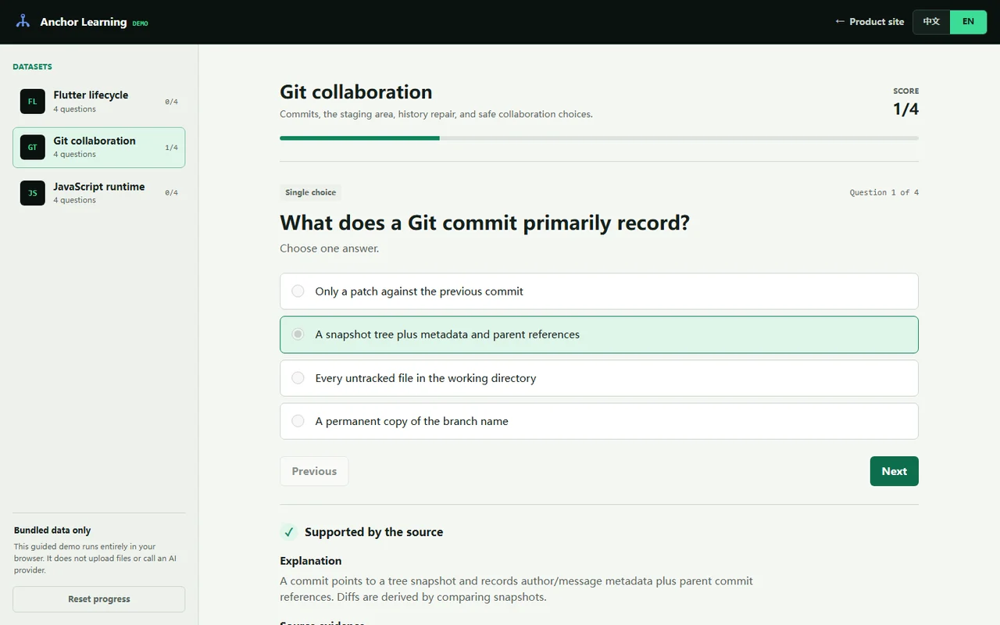

Semantic chunking
Split at meaningful document or code boundaries and retain a stable locator.
Traceable learning workspace
Turn documentation and code into source-grounded practice. Every explanation stays connected to the exact passage that supports it.
The web demo uses bundled sample data and makes no AI requests.
From source to review
Anchor keeps ingestion, generation, verification, and review as separate steps so weak evidence can stop before it becomes study material.
Bring in Markdown, technical notes, or code while preserving headings and structural boundaries.
Extract concepts and create varied exercises from bounded source chunks.
Check that cited chunks exist and that answers are supported before review.
Practice with source excerpts, guided hints, and spaced follow-up.
Grounding by construction
The system treats generated content as a proposal. Structure, citation, and answer support are checked independently before the material is considered ready.
Split at meaningful document or code boundaries and retain a stable locator.
Reject references to missing chunks and keep the cited excerpt visible.
Confirm that the proposed answer follows from the cited material; send uncertainty to review.
Browser demo
Choose Flutter, Git, or JavaScript. Submit an answer, inspect the supporting excerpt, ask for a scripted tutor hint, and keep your progress in this browser.

Designed for technical learning
Convert framework documentation and code into deliberate practice.
Turn architecture notes into an inspectable onboarding path.
Practice from system-design notes and implementation decisions instead of generic prompts.
Start with evidence